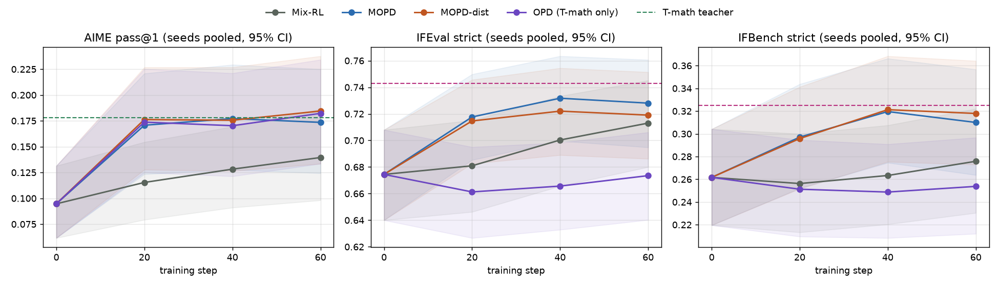
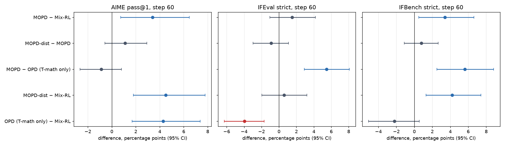
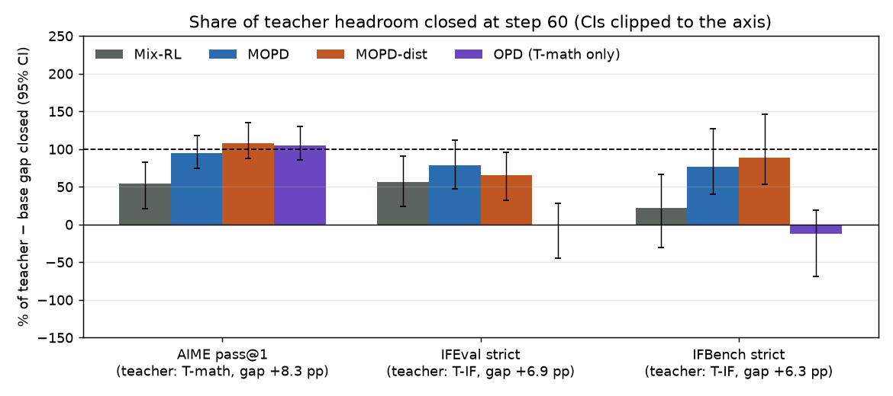
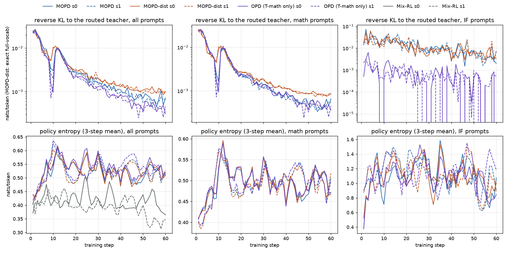

TPU Builders study
Multi-teacher on-policy distillation on TPU v6e
We distilled a math teacher and an instruction-following (IF) teacher into one Qwen3.5-2B student with multi-teacher on-policy distillation (MOPD), on Google TPU v6e-4 with TorchTPU + vLLM.
Same machines, recipe and AIME eval as the companion study: Async vs sync RL on TPU v6e →
TL;DR
- MOPD merges both specialists into one 2B student; Mix-RL does not. At step 60, MOPD matches the math teacher on AIME (−0.4 pp, 95% CI −2.1 to +1.2) and is within 1.5 pp of the IF teacher on IFEval and IFBench. Mix-RL (GRPO on the same mixed prompts) trails the teachers by 3.8, 3.0 and 4.9 pp, all significant.
- MOPD beats Mix-RL at the same number of samples on all three benchmarks: AIME +3.4 pp [+0.7, +6.5], IFEval +1.5 pp [−1.0, +4.2], IFBench +3.4 pp [+0.5, +6.6]. It closes 95%, 78% and 76% of the base-to-teacher gap; Mix-RL closes 54%, 56% and 22%. MOPD at step 20 already beats Mix-RL at step 60 on AIME (+3.1 pp [+1.3, +5.1]).
- Routing is what buys the IF gains. Distilling from T-math alone on every prompt matches MOPD on math, but MOPD is +5.5 pp better on IFEval and +5.6 pp better on IFBench.
- The exact full-vocabulary loss (MOPD-dist) ties with sampled-token MOPD. All three differences are within ±3 pp, and it costs only about 3.5% more time per step (205 vs 198 s). The cheaper sampled form is enough at this scale.
- Total cost about $295 (pilot ≈ $78, full study ≈ $217): $244.54 on the VM ledger plus about $51 off-ledger. The four trained teachers are kept in GCS.
What is MOPD
Multi-teacher on-policy distillation (MOPD) merges several specialist models into one. The student samples its own answers, and each answer is scored token by token by the teacher specialised in that prompt's domain, here a math teacher or an instruction-following teacher. The student is then pushed toward that teacher's distribution (lower reverse KL), so one model picks up every specialist's skill.
Results at a glance
Step-60 scores. Each trained arm pools 2 seeds; teachers and the base model are single runs. AIME is pass@1 on 136 problems × 16 samples. IFEval is strict prompt accuracy on 541 prompts × 4 samples, and IFBench strict accuracy on 300 prompts × 4 samples. Brackets are 95% CIs from a hierarchical bootstrap over problems, seeds and samples (10,000 draws).
| Model | AIME pass@1 | IFEval strict | IFBench strict |
|---|---|---|---|
| Base Qwen3.5-2B | 9.47% [6.2, 13.1] | 67.4% [64.0, 70.8] | 26.2% [22.0, 30.4] |
| T-math teacher (GRPO, math) | 17.78% [13.0, 22.9] | 66.4% [62.8, 69.8] | 24.8% [20.5, 29.1] |
| T-IF teacher (GRPO, IF) | 10.57% [7.0, 14.6] | 74.3% [71.1, 77.5] | 32.5% [27.8, 37.3] |
| Mix-RL (GRPO, math + IF) | 13.95% [9.8, 18.6] | 71.3% [68.0, 74.5] | 27.6% [23.0, 32.2] |
| MOPD (sampled token) | 17.35% [12.4, 22.5] | 72.8% [69.5, 76.1] | 31.0% [26.4, 35.7] |
| MOPD-dist (exact, full vocab) | 18.45% [13.4, 23.8] | 71.9% [68.6, 75.1] | 31.8% [27.3, 36.4] |
| OPD from T-math only | 18.22% [13.4, 23.4] | 67.4% [64.0, 70.6] | 25.4% [21.2, 29.7] |
Base IFEval and IFBench pool two evals of the same base model (8 samples per prompt). Teachers are the stored 60-step teachers.
Share of the teacher gap closed
How much of the base-to-teacher gap each arm closes at step 60, with 95% CIs. The teacher is T-math for AIME and T-IF for IFEval and IFBench. 100% means at teacher level.
| Arm | AIME (gap +8.3 pp) | IFEval (gap +6.9 pp) | IFBench (gap +6.3 pp) |
|---|---|---|---|
| Mix-RL | 54% [21, 82] | 56% [24, 91] | 22% [−31, 66] |
| MOPD | 95% [75, 118] | 78% [48, 112] | 76% [40, 127] |
| MOPD-dist | 108% [87, 135] | 65% [32, 96] | 89% [53, 146] |
| OPD (T-math only) | 105% [86, 130] | −1% [−45, 28] | −13% [−69, 19] |
T-math alone closes the math gap but none of the IF gaps; MOPD routes each prompt to its domain's teacher and closes both.
Key charts




MOPD vs MOPD-dist
A tie within ±3 pp, for only about 3.5% more step time. Use the sampled-token form at this scale.
| MOPD-dist − MOPD, step 60 | AIME | IFEval | IFBench |
|---|---|---|---|
| Difference, pp [95% CI] | +1.10 [−0.57, +2.92] | −0.90 [−2.98, +1.11] | +0.79 [−1.12, +2.67] |
- MOPD scores only the sampled token: the per-token advantage is the teacher-minus-student log-prob, clipped at ±5. MOPD-dist computes the exact reverse KL to the routed teacher over all 248,320 vocabulary entries at every position.
- All three step-60 differences are within ±1.1 pp, with every CI inside ±3 pp. The same holds at steps 20 and 40, where all differences are within ±1 pp.
- Steps took 205 s against 198 s (about 3.5% slower), not the 20% the plan modelled. Rebuilding the teacher logits from shipped hidden states adds about 8 s of learner time per step.
- Shipping the teacher's final hidden state (bf16, through /dev/shm) and rebuilding its logits on the learner was exact: the rebuilt logits matched the teacher's own to 0.0 at every step.
Cost
All runs used Flex v6e-4 in europe-west4-a at $5.40/h. Spot was never granted, and on-demand was never requested.
| Budget | VM-hours | Ledger | Off-ledger (est.) | Total | Cap |
|---|---|---|---|---|---|
| Pilot (30 steps) | 11.1 | $60.06 | ≈ $18 | ≈ $78 | $90 |
| Full study (60 steps × 2 seeds) | 34.2 | $184.48 | ≈ $33 | ≈ $217 | $255 |
| Total | 45.3 | $244.54 | ≈ $51 | ≈ $295 | $345 |
The ledger counts VM time at the Flex list price, per boot. Off-ledger is mostly cross-region GCS transfer (estimated at $0.08/GB): the compile cache lives in asia-northeast1 and every fresh VM in europe-west4 pulled it, plus teacher uploads and downloads. Only GCS storage still bills: cache/ at 120 GB and teachers/ at 18.3 GB, about $3.2/month.
The stored teachers
All four teachers are kept under gs://qrl-bc4a-compile-cache-tpu-builders-509006/teachers/qwen3.5-2b/. Each directory holds a loadable Hugging Face model (bf16 safetensors, config, tokenizer), teacher.json with scores and recipe, SHA256SUMS and a COMPLETE marker. Every object has a GCS temporary hold.
| Teacher | Directory | AIME | IFEval | IFBench |
|---|---|---|---|---|
| T-math, 60 steps (used) | math-grpo-k1is-60steps-s0-20261124-9dfe9c2/ | 17.8% | 66.4% | 24.8% |
| T-IF, 60 steps (used) | if-grpo-k1is-60steps-s0-20261124-9dfe9c2/ | 10.6% | 74.3% | 32.5% |
| T-math, 30 steps (pilot) | math-grpo-k1is-30steps-s0-20261124-d909884/ | 15.7% | 66.7% | 27.9% |
| T-IF, 30 steps (pilot) | if-grpo-k1is-30steps-s0-20261124-d909884/ | 9.5% | 71.3% | 28.1% |
To remove a teacher later, first release its holds (gcloud storage objects update --no-temporary-hold).
Caveats
- The 9B baseline was swapped for "T-math for all". In the pilot, Qwen3.5-9B started at a reverse KL of 0.194 to our student against 0.0144 for the same-origin teachers (13.4×), over the plan's gate-5 limit of 5× (the 4B was 12×). The full study therefore ran OPD from T-math on every prompt instead, so "a bigger, distant teacher hurts" is untested here.
- Policy entropy drifts upward in every distillation arm: from about 0.46 (first 5 steps) to 0.51–0.53 (last 5), and 0.54–0.57 at step 60, mostly on math prompts. Mix-RL goes the other way (0.40 → 0.35). Gate 4 only requires entropy to stay above half its start, so this is a drift, not a failure, but longer runs should watch it.
- The IF-prompt KL fell less in seed 1. MOPD went 0.038 → 0.0033 (12×) in s0 but 0.024 → 0.0058 (4×) in s1; MOPD-dist 6× vs 3×. MOPD s1's IF KL also ticked up to 0.0074 at step 60. It rests on 8 IF prompts per step and does not show in the evals: MOPD s1 has the best IFEval of any student run (73.3%).
- Two seeds per arm, one run per teacher. Single-arm AIME CIs are about ±5 pp; paired differences are tighter (±1.5–3 pp) because arms share problems.
- The math headroom is small (T-math is +8.3 pp above base), so headroom ratios have wide CIs. Distillation arms are bounded by their teachers and plateau by step 20 on AIME.
References
- MOPD: Multi-Teacher On-Policy Distillation for Capability Integration in LLM Post-Training, arXiv:2606.30406 · Xiaomi project page.
- Xiaomi LLM-Core, MiMo-V2-Flash Technical Report, arXiv:2601.02780, §4.1 and §4.4 (MOPD definition and loss).
- Open-MOPD (Tsinghua AIR + ByteDance Seed), open code and SmolLM3-3B checkpoints · arXiv:2608.19098.
- XiaomiMiMo/MiMo-V2-Flash: model weights; no MOPD training code.
MOPD2, the later variant with teacher-prefix and SFT-prefix streams described in the MiMo-V2.6-Flash-MOPD model card, is out of scope here.
Appendix
Per-seed numbers
Step-60 scores per seed. Base IFEval was evaluated twice (68.2% and 66.7%; IFBench 26.0% and 26.3%) and pooled to 67.4% and 26.2%. Base AIME is 9.47%.
| Arm | Seed | AIME | IFEval | IFBench |
|---|---|---|---|---|
| Mix-RL | s0 | 12.68% | 71.9% | 28.7% |
| Mix-RL | s1 | 15.21% | 70.7% | 26.5% |
| MOPD | s0 | 17.10% | 72.3% | 30.8% |
| MOPD | s1 | 17.60% | 73.3% | 31.2% |
| MOPD-dist | s0 | 18.89% | 72.4% | 31.7% |
| MOPD-dist | s1 | 18.01% | 71.4% | 31.9% |
| OPD (T-math only) | s0 | 18.34% | 67.0% | 25.1% |
| OPD (T-math only) | s1 | 18.11% | 67.7% | 25.7% |
Seeds-pooled means at steps 20 / 40 / 60:
| Arm | AIME % | IFEval % | IFBench % |
|---|---|---|---|
| Mix-RL | 11.53 / 12.82 / 13.95 | 68.1 / 70.0 / 71.3 | 25.6 / 26.3 / 27.6 |
| MOPD | 17.07 / 17.72 / 17.35 | 71.8 / 73.2 / 72.8 | 29.7 / 32.0 / 31.0 |
| MOPD-dist | 17.62 / 17.56 / 18.45 | 71.5 / 72.2 / 71.9 | 29.6 / 32.1 / 31.8 |
| OPD (T-math only) | 17.37 / 17.03 / 18.22 | 66.1 / 66.6 / 67.4 | 25.1 / 24.9 / 25.4 |
Paired differences (steps 20, 40, 60)
Percentage points with 95% CIs, paired by problem. Bold: CI excludes zero.
Step 60
| Comparison | AIME | IFEval | IFBench |
|---|---|---|---|
| MOPD − Mix-RL | +3.40 [+0.74, +6.46] | +1.50 [−1.04, +4.18] | +3.42 [+0.50, +6.62] |
| MOPD-dist − Mix-RL | +4.50 [+1.79, +7.79] | +0.60 [−1.96, +3.21] | +4.21 [+1.29, +7.42] |
| MOPD − OPD (T-math only) | −0.87 [−2.64, +0.80] | +5.45 [+2.91, +8.09] | +5.63 [+2.50, +8.83] |
| MOPD-dist − MOPD | +1.10 [−0.57, +2.92] | −0.90 [−2.98, +1.11] | +0.79 [−1.12, +2.67] |
| OPD (T-math only) − Mix-RL | +4.27 [+1.70, +7.38] | −3.95 [−6.26, −1.69] | −2.21 [−5.08, +0.54] |
Step 40
| Comparison | AIME | IFEval | IFBench |
|---|---|---|---|
| MOPD − Mix-RL | +4.89 [+2.57, +7.40] | +3.14 [+0.55, +5.89] | +5.63 [+2.67, +8.75] |
| MOPD-dist − Mix-RL | +4.73 [+2.53, +7.17] | +2.17 [−0.51, +5.06] | +5.79 [+2.71, +9.08] |
| MOPD − OPD (T-math only) | +0.69 [−0.97, +2.41] | +6.61 [+4.18, +9.10] | +7.08 [+4.17, +10.12] |
| MOPD-dist − MOPD | −0.16 [−1.77, +1.42] | −0.97 [−2.89, +0.97] | +0.17 [−2.08, +2.46] |
| OPD (T-math only) − Mix-RL | +4.20 [+1.91, +6.59] | −3.47 [−5.85, −1.02] | −1.46 [−4.13, +1.25] |
Step 20
| Comparison | AIME | IFEval | IFBench |
|---|---|---|---|
| MOPD − Mix-RL | +5.54 [+3.17, +8.04] | +3.67 [+1.06, +6.28] | +4.08 [+1.12, +7.21] |
| MOPD-dist − Mix-RL | +6.09 [+3.84, +8.52] | +3.37 [+0.81, +5.94] | +3.96 [+1.21, +6.87] |
| MOPD − OPD (T-math only) | −0.30 [−2.16, +1.56] | +5.64 [+3.14, +8.13] | +4.58 [+1.62, +7.67] |
| MOPD-dist − MOPD | +0.55 [−1.08, +2.25] | −0.30 [−2.43, +1.80] | −0.12 [−2.67, +2.42] |
| OPD (T-math only) − Mix-RL | +5.84 [+3.40, +8.52] | −1.96 [−4.39, +0.51] | −0.50 [−3.04, +1.96] |
Arm minus teacher at step 60 (seeds pooled, simpler bootstrap over problems and samples): MOPD −0.44 [−2.09, +1.19] on AIME vs T-math, −1.50 [−3.51, +0.51] on IFEval and −1.50 [−4.04, +1.04] on IFBench vs T-IF. Mix-RL: −3.84 [−6.04, −1.72], −3.00 [−5.43, −0.62], −4.92 [−8.04, −1.83].
Speed and training dynamics
| Run | s/step | Wall h | Learner idle | Generator idle | Train tokens |
|---|---|---|---|---|---|
| T-math teacher | 180.8 | 3.01 | 5.7% | 15.5% | 20.1 M |
| T-IF teacher | 55.9 | 0.93 | 29.7% | 16.4% | 1.2 M |
| Mix-RL s0 | 118.9 | 1.98 | 10.3% | 14.1% | 10.7 M |
| Mix-RL s1 | 128.6 | 2.14 | 10.8% | 13.7% | 11.6 M |
| MOPD s0 | 197.1 | 3.29 | 3.5% | 46.1% | 20.6 M |
| MOPD s1 | 199.5 | 3.33 | 3.6% | 46.7% | 20.4 M |
| MOPD-dist s0 | 205.0 | 3.42 | 3.1% | 48.5% | 20.4 M |
| MOPD-dist s1 | 205.8 | 3.43 | 3.2% | 48.2% | 20.5 M |
| OPD (T-math only) s0 | 194.3 | 3.24 | 2.8% | 44.7% | 20.6 M |
| OPD (T-math only) s1 | 196.2 | 3.27 | 2.9% | 44.9% | 20.8 M |
- Distillation trains every sampled sequence (about 20.5 M tokens per run), so the learner is the bottleneck: about 3% learner idle vs 46% generator idle. Mix-RL trains only groups with reward variance, so its steps are shorter (about 124 s).
- Teacher scoring runs on its own chip while the learner trains the previous batch, and the learner never waited for it after step 0.
- The full study ran 8 of 8 work items with no failure, retry or preemption, across 4 Flex VM boots. The pilot was preempted once and redid its runs.
| Run | Reverse KL, first 5 → last 5 steps | IF-prompt KL | Entropy |
|---|---|---|---|
| MOPD s0 | 0.0201 → 0.0007 | 0.0382 → 0.0033 (12×) | 0.47 → 0.53 (0.56 at step 60) |
| MOPD s1 | 0.0196 → 0.0006 | 0.0237 → 0.0058 (4×) | 0.45 → 0.51 (0.57 at step 60) |
| MOPD-dist s0 | 0.0185 → 0.0010 | 0.0348 → 0.0057 (6×) | 0.47 → 0.53 (0.55 at step 60) |
| MOPD-dist s1 | 0.0172 → 0.0010 | 0.0221 → 0.0079 (3×) | 0.45 → 0.52 (0.57 at step 60) |
Pilot go/no-go gates
One seed of MOPD, MOPD-dist and Mix-RL plus both teachers, at 30 steps. All seven gates passed.
| Gate | Result | Numbers |
|---|---|---|
| 1. End to end, learner idle < 10% | PASS | 30/30 steps plus final evals; learner idle 6.2% (MOPD), 6.1% (MOPD-dist). |
| 2. s/step inside the modelled P90 | PASS | MOPD 207.9 s (P90 222), MOPD-dist 214.8 s (P90 272). |
| 3. MOPD-dist fits at --mb-tokens 8192; hidden-state loss matches direct logits within 1e-3 | PASS | Ran at 8192; difference 0.0 (mean and max) at every step. |
| 4. Reverse KL falls, entropy holds | PASS | MOPD KL 0.0088 → 0.0006, MOPD-dist 0.0097 → 0.0010; entropy 0.42 → 0.40. |
| 5. 9B starting KL measured | PASS, switch triggered | 9B 0.194, 4B 0.178, same-origin 0.0144 (13.4×) → single teacher switched to T-math on every prompt. |
| 6. Teacher export round trip, hold, delete refusal | PASS | AIME 15.2% vs logged 15.7%, IFEval 71.8% vs 71.3%; 0 missing / 0 mismatched of 320 tensors; 42/42 objects held; deletes of teachers/ refused. |
| 7. Re-price the full plan | PASS | P90 36.7 VM-h = $198 on the ledger, under $255. Actual: $184.48. |
Method
- Student and data. Qwen3.5-2B. Each step samples 8 math prompts (AIME 1983–2023) and 8 IF prompts (RLVR-IFeval); 8 answers per prompt, up to 6,144 tokens, temperature 1. Every arm sees the same prompt stream per seed. All runs are async lag 1 with truncated importance sampling (cap 2), the recipe the async vs sync study recommended.
- Teachers. Same-origin specialists trained from the same base with GRPO for 60 steps, 16 prompts per step: T-math on AIME prompts (exact \boxed{} match reward), T-IF on RLVR-IFeval prompts (verifiable instruction-checker reward).
- Arms (2 seeds × 60 steps):
- Mix-RL: GRPO on the mixed math + IF batches, outcome reward only.
- MOPD: each answer goes to its domain's teacher; per-token advantage sg[log π_teacher − log π_student], clipped at ±5, in the policy-gradient loss with truncated IS. No outcome reward.
- MOPD-dist: exact reverse KL to the routed teacher over the full vocabulary; the teacher ships its final hidden state and the learner rebuilds logits in chunks of 512 positions.
- OPD from T-math only: MOPD's loss, but T-math scores every prompt. Isolates the value of routing; replaced the planned OPD-9B.
- Layout on one v6e-4. Distillation: chip 0 vLLM generator, chip 1 TorchTPU learner, chip 2 teacher(s), chip 3 step-20/40 evals. Mix-RL: both seeds on one VM, 2 chips each.
- Eval. AIME pass@1 on the async study's 136-problem set × 16 samples (AIME 2024–2026, BRUMO 2025, HMMT 2025–2026); IFEval strict prompt accuracy (541 × 4); IFBench strict accuracy (300 × 4).
- Statistics. Hierarchical bootstrap, 10,000 draws: resample problems, then seeds, then redraw each problem's outcomes from a binomial. Differences within a benchmark share problem draws, so they are paired.
- Code. Branch cursor/qwen38-async-vs-sync-rl-bc4a, under rl/qrl/ and rl/tpu/; raw results in rl/results/mopdpilot/ and rl/results/mopdfull/.